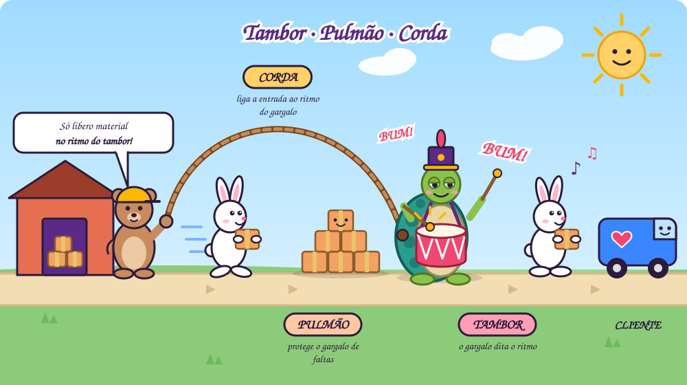

Conceito
A Teoria das Restrições (TOC, do inglês Theory of Constraints) parte de uma premissa simples: todo sistema existe para atingir uma meta, e em todo sistema há pelo menos uma restrição que limita o quanto ele consegue avançar em direção a ela. Assim como a resistência de uma corrente é determinada pelo seu elo mais fraco, a capacidade de uma empresa é determinada pela sua restrição. [3]
A restrição pode ser física (uma máquina, uma equipe, um fornecedor), de mercado (falta de demanda) ou, com muita frequência, de política: regras, métricas e hábitos que um dia fizeram sentido e continuam sendo seguidos mesmo depois de terem perdido a razão de existir.
Para lidar com ela, Goldratt propôs os cinco passos de focalização:
- Identificar a restrição do sistema.
- Explorar a restrição: extrair o máximo dela sem grandes investimentos, eliminando desperdícios e paradas.
- Subordinar todo o resto à decisão anterior: o restante do sistema passa a trabalhar no ritmo da restrição.
- Elevar a restrição: se ainda for preciso, investir para aumentar sua capacidade.
- Voltar ao passo 1 quando a restrição for quebrada, sem deixar que a inércia se torne a nova restrição.
A TOC também propõe medir o desempenho com três indicadores globais, no lugar de dezenas de métricas locais [1]:
Ganho (throughput)
A velocidade com que o sistema gera dinheiro por meio das vendas.
Inventário (ou investimento)
Todo o dinheiro que o sistema investiu em coisas que pretende vender.
Despesa operacional
Todo o dinheiro que o sistema gasta para transformar inventário em ganho.
A lógica é aumentar o ganho enquanto se reduzem, ao mesmo tempo, o inventário e a despesa operacional.
Quem é o autor?
Eliyahu M. Goldratt (31 de março de 1947 — 11 de junho de 2011) foi um físico israelense que se tornou um dos pensadores de gestão mais influentes do século XX. Formado pela Universidade de Tel Aviv, com mestrado e doutorado pela Universidade Bar-Ilan, aplicou o raciocínio científico da física aos problemas das organizações. [4]
No fim dos anos 1970 desenvolveu o OPT, um software de programação da produção, e percebeu que o que realmente limitava os resultados das fábricas não era o cálculo, mas a forma de pensar dos gestores. Para ensinar essa forma de pensar, escreveu um romance de negócios: A Meta (1984), em coautoria com Jeff Cox, que vendeu milhões de exemplares no mundo todo.
Depois vieram, entre outros, Mais que sorte (1994), Corrente Crítica (1997), Necessária, sim, mas não suficiente (2000) e A Escolha (2008), que levaram a TOC da fábrica para projetos, distribuição, vendas, tecnologia e para a própria vida.
O livro “A Meta”
Alex Rogo é gerente de uma fábrica da UniCo que atrasa pedidos, acumula estoque e dá prejuízo. O vice-presidente da divisão lhe dá um ultimato: três meses para reverter a situação, ou a fábrica será fechada. Ao mesmo tempo, o casamento de Alex desmorona pela falta de tempo em casa. [1]
Alex reencontra Jonah, um antigo professor de física, que em vez de dar respostas faz perguntas. A primeira delas desmonta tudo: qual é a meta da empresa? A resposta, fazer dinheiro hoje e no futuro, mostra que as métricas que a fábrica perseguia, como eficiência de cada máquina e custo por peça, não tinham relação direta com essa meta.
Num acampamento com o grupo de escoteiros do filho, Alex observa que a fila de meninos se espalha por causa do mais lento, Herbie. Ali ele entende os eventos dependentes e as flutuações estatísticas: numa sequência de etapas, os atrasos se acumulam e os ganhos não se compensam. Colocando Herbie à frente da fila e aliviando sua mochila, o grupo inteiro anda junto.
De volta à fábrica, a equipe encontra seus “Herbies”, a máquina NCX-10 e o tratamento térmico, e passa a gerenciar a fábrica inteira em função deles. Os estoques caem, as entregas se normalizam, a fábrica volta a dar lucro, e Alex é promovido. A lição final é que melhorar é um processo contínuo, e que o mais valioso não é a solução em si, mas o método para chegar a ela.
O livro “Mais que sorte”
Na continuação de A Meta, Alex Rogo agora é vice-presidente executivo e responde por três empresas de um grupo diversificado: uma de cosméticos, uma de caldeiras a vapor e uma gráfica. A diretoria decide vendê-las para levantar caixa, e Alex precisa torná-las mais valiosas, sabendo que a venda pode custar o emprego de muitas pessoas. [2]
Se A Meta tratava da restrição física na fábrica, Mais que sorte trata da restrição de mercado e de política. Alex e sua equipe usam os Processos de Pensamento da TOC, como a Árvore da Realidade Atual, a Nuvem de Evaporação e a Árvore da Realidade Futura, para identificar o problema-raiz de cada empresa e construir ofertas que os clientes não conseguem recusar.
As mesmas ferramentas aparecem na vida pessoal de Alex, na relação com os filhos adolescentes. O título diz o essencial: resultados que parecem sorte são, na verdade, fruto de um processo de raciocínio estruturado, que pode ser aprendido e repetido.
O livro “Corrente Crítica”
Rick Silver é professor de uma escola de negócios que precisa provar o seu valor para garantir o cargo, numa instituição que também luta para atrair alunos. Numa turma de executivos, ele e os alunos investigam por que quase todos os projetos atrasam, estouram o orçamento ou entregam menos do que prometeram, mesmo com estimativas cheias de margem de segurança. [8]
A resposta está no comportamento humano diante da segurança embutida em cada tarefa:
- Síndrome do estudante: se há folga, o trabalho só começa de verdade perto do prazo.
- Lei de Parkinson: o trabalho se expande até ocupar todo o tempo disponível, e as antecipações nunca são repassadas.
- Multitarefa: alternar entre projetos atrasa todos eles ao mesmo tempo.
A solução é a Corrente Crítica: a sequência mais longa de tarefas dependentes, considerando não só a ordem das atividades, mas também a disputa pelos mesmos recursos. As estimativas de cada tarefa são reduzidas, a segurança individual é retirada e concentrada num pulmão do projeto, no fim, e em pulmões de convergência onde caminhos secundários se juntam à corrente crítica. O acompanhamento deixa de ser “cada tarefa no prazo” e passa a ser “quanto do pulmão já foi consumido”. É a aplicação dos cinco passos de focalização à gestão de projetos.
O livro “Necessária, sim, mas não suficiente”
Escrito com Eli Schragenheim e Carol Ptak, o romance acompanha uma empresa que desenvolve sistemas ERP. Ela cresce rápido, mas os clientes começam a perceber que, depois de implantações caras e demoradas, os resultados financeiros não mudam. O mercado desacelera, e a empresa precisa descobrir por que o seu produto não entrega o valor prometido. [9]
A conclusão dá nome ao livro: a tecnologia é necessária, mas não suficiente. Um ERP torna a informação disponível muito mais rápido, mas se as empresas continuam usando as mesmas regras de antes, como contabilidade de custos, eficiência local e lotes grandes, o sistema apenas automatiza o comportamento antigo. O benefício só aparece quando as regras mudam junto com a tecnologia.
É deste livro que vem a raiz das quatro perguntas sobre tecnologia, discutidas na última seção deste artigo, e que se aplicam hoje, quase palavra por palavra, à adoção da inteligência artificial.
O livro “A Escolha”
Último grande livro de Goldratt, escrito com a filha, Efrat Goldratt-Ashlag, A Escolha é um diálogo entre pai e filha. Ela questiona; ele explica, com casos reais de empresas, como pensa. O tema deixa de ser uma técnica de gestão e passa a ser a própria forma de pensar. [10]
Goldratt defende que pensar com clareza é uma escolha, e que ela se apoia em algumas crenças:
Simplicidade inerente
Toda situação, por mais complexa que pareça, é extremamente simples: poucos elementos governam o comportamento do todo.
Não existem conflitos na realidade
Todo conflito se apoia em ao menos uma premissa errada, que pode ser encontrada e removida sem meio-termo.
As pessoas são boas
Antes de culpar alguém, procure a regra ou a medição que o leva a agir assim.
O céu é o limite
Toda situação pode ser melhorada de forma significativa.
Nunca diga “eu sei”
Achar que já sabe tudo é o que impede de enxergar a próxima melhoria.
O livro fecha o ciclo iniciado em A Meta: a Teoria das Restrições não é só um método para fábricas ou projetos, mas um modo de pensar que pode ser escolhido, e que leva a uma vida mais plena.
Diferença entre produção puxada e empurrada
- Empurrada
MRPA produção é disparada por previsões e planos. Cada etapa produz o que foi programado e “empurra” o resultado para a etapa seguinte, esteja ela pronta ou não. O risco é acumular estoque intermediário, alongar o tempo de atravessamento e esconder problemas atrás de pilhas de material. - Puxada
KanbanA produção é disparada pelo consumo real. Uma etapa só produz quando a seguinte sinaliza que precisa, como no sistema Toyota de Taiichi Ohno. O estoque em processo fica limitado, e os problemas aparecem cedo. [6]
A TOC propõe o seu próprio mecanismo, o Tambor-Pulmão-Corda (Drum-Buffer-Rope), que é a versão industrial do Herbie à frente da fila:
Tambor
A restrição dita o ritmo de todo o sistema.
Pulmão
Um estoque de proteção antes da restrição garante que ela nunca fique parada por falta de material.
Corda
A liberação de material na entrada fica amarrada ao ritmo da restrição, e não à capacidade das primeiras etapas.

Em vez de limitar o estoque em cada etapa, como no kanban, o Tambor-Pulmão-Corda protege apenas o ponto que importa. O resultado é um sistema puxado pela restrição, com menos estoque e entregas mais previsíveis.
Por que os gargalos importam tanto
Imagine uma linha com quatro etapas:
- Corte12 peças/h
- Solda9 peças/h
- Pintura5 peças/hgargalo
- Montagem10 peças/h
- Saída5 peças/h
Não importa quanto o corte ou a montagem melhorem: o sistema entrega 5 peças por hora. Todo esforço aplicado fora do gargalo apenas gera mais estoque parado na frente da pintura. Goldratt resumiu isso em duas frases [1]:
Uma hora perdida no gargalo é uma hora perdida no sistema inteiro.
Uma hora economizada num recurso que não é gargalo é uma miragem.
Daí vêm consequências que contrariam a intuição gerencial:
- A soma dos ótimos locais não é o ótimo global. Manter todas as máquinas e pessoas 100% ocupadas não aumenta o ganho; aumenta o estoque.
- O custo real de uma hora parada no gargalo é o ganho do sistema inteiro naquela hora, não o custo daquela máquina.
- Inspeção de qualidade antes do gargalo, manutenção preventiva do gargalo e uma boa fila na frente dele valem muito mais do que parecem.
- Saber onde está o gargalo é saber onde a gestão deve focar. Sem esse foco, melhoria contínua vira “melhoria em todo lugar”, que na prática é melhoria em lugar nenhum.
A crítica à prevalência da administração financeira
Goldratt foi um dos críticos mais duros da forma como a lógica financeira tradicional, apoiada na contabilidade de custos, passou a comandar as decisões operacionais. Em 1983, ele a chamou de “a inimiga número um da produtividade”. [11]
A crítica não é ao dinheiro: a meta, afinal, é ganhar dinheiro. A crítica é à forma de medi-lo. A contabilidade de custos rateia as despesas fixas entre os produtos e cria um “custo unitário” que não existe na realidade, já que salários, aluguel e energia não mudam se a fábrica produzir uma peça a mais ou a menos. Quando esse número passa a guiar a operação, surgem distorções [5]:
- Produzir para absorver custos: o estoque “carrega” parte das despesas fixas para o balanço, e o lucro contábil sobe mesmo quando nada foi vendido.
- Culto à eficiência local: recurso parado é visto como desperdício, então os não-gargalos produzem além do necessário e enchem a fábrica de estoque.
- Decisões erradas de mix e preço: produtos que parecem dar prejuízo pelo custo-padrão podem ser os mais lucrativos, e pedidos que ocupariam capacidade ociosa são recusados por ficarem “abaixo do custo”.
- Mundo dos custos contra mundo do ganho: cortar custos tem um piso; aumentar o ganho não tem teto. Empresas dominadas pela lógica do corte reduzem pessoas e investimentos, às vezes na própria restrição, e acabam reduzindo o ganho que queriam proteger.
Um exemplo simples, com a pintura como gargalo:
- Visão de custos
margem/peçaO produto Y vende a 120 e usa 50 de material; o X vende a 100 e usa 40. Y deixa 70 por peça, X deixa 60. A decisão parece óbvia: priorizar Y. - Visão de ganho
ganho/minutoY ocupa 30 minutos do gargalo; X ocupa 15. Por minuto de gargalo, X gera 4,00 e Y apenas 2,33. Com o gargalo cheio, priorizar X gera cerca de 70% mais ganho com a mesma estrutura.
A alternativa proposta pela TOC é a Contabilidade de Ganhos (Throughput Accounting): o lucro líquido é o ganho menos a despesa operacional, e o retorno sobre o investimento é esse lucro dividido pelo inventário. Toda decisão passa por três perguntas: aumenta o ganho? reduz o inventário? reduz a despesa operacional? E a prioridade é sempre o ganho.
A mensagem não é abolir as finanças, mas colocá-las a serviço da meta, e não o contrário. Quando a planilha manda na operação, a empresa otimiza o relatório do trimestre e perde de vista o sistema que gera dinheiro.
Ter visão empreendedora e senso de dono
A primeira pergunta de Jonah, “qual é a meta?”, é uma pergunta de dono. Um funcionário que olha apenas para a sua área tende a otimizar o próprio indicador: eficiência da máquina, horas faturadas, tarefas concluídas. Um dono olha para o sistema inteiro e pergunta se aquilo está gerando dinheiro, hoje e no futuro.
Diga-me como me medes, e eu te direi como me comportarei. [5]
A frase de Goldratt explica por que o senso de dono raramente nasce sozinho. Se as métricas premiam o ótimo local, as pessoas vão perseguir o ótimo local. Ter visão empreendedora, na lógica da TOC, significa:
- Enxergar a empresa como uma corrente, e não como um conjunto de departamentos independentes.
- Tratar a restrição como problema de todos, inclusive de quem não trabalha nela.
- Questionar políticas e premissas, em vez de aceitar “sempre foi assim”. A Nuvem de Evaporação existe justamente para desmontar falsos dilemas sem cair em meios-termos.
- Responder às três perguntas da mudança: o que mudar, para o que mudar e como provocar a mudança.
- Assumir o resultado final, e não apenas a tarefa. Alex Rogo não salvou a fábrica cumprindo ordens; salvou porque passou a pensar como alguém que tinha algo a perder.
TOC aplicada na TI
Uma área de TI também é um sistema de fluxo, só que invisível. Não há pilhas de peças no chão, mas há o equivalente: histórias iniciadas e não terminadas, branches esperando revisão, código pronto que não foi implantado, chamados parados em filas. Esse é o inventário da TI, e ele se comporta exatamente como o da fábrica de Alex Rogo: esconde problemas, alonga prazos e não gera ganho até chegar ao cliente.
Não por acaso, O Projeto Fênix, um dos romances mais lidos sobre TI, é uma homenagem declarada a A Meta. Nele, a restrição é Brent, o especialista de quem todos dependem, e a virada acontece quando a empresa passa a proteger e subordinar tudo a ele, em vez de sobrecarregá-lo. [13]
Métodos ágeis
Ágil e TOC compartilham a mesma base: lotes pequenos, fluxo contínuo, feedback rápido e limite ao trabalho em andamento. David J. Anderson aplicou a TOC à engenharia de software e, partindo do Tambor-Pulmão-Corda, chegou ao método Kanban para TI. [12] [14]
Pelo olhar da TOC, alguns vícios comuns em times ágeis ficam evidentes:
- Velocidade como eficiência local: aumentar os pontos entregues pelo time de desenvolvimento não adianta se a restrição está em testes, homologação, implantação ou na decisão do negócio.
- Todos 100% ocupados: desenvolvedores sempre começando novas histórias enchem as filas de revisão e teste. O lema kanban “pare de começar, comece a terminar” é o passo de subordinação.
- “Pronto” que não está em produção: uma história concluída e não implantada é estoque. Ganho só existe quando o usuário recebe valor.
- Restrições de política: comitês de mudança, janelas de implantação e aprovações em série costumam ser gargalos maiores que qualquer pessoa ou ferramenta.
Os cinco passos se traduzem de forma direta: mapear o fluxo de valor e encontrar onde o trabalho espera mais tempo (identificar); proteger o tempo do gargalo e tirar dele tarefas que outros podem fazer (explorar); limitar o trabalho em andamento e fazer o time ajudar na etapa travada (subordinar); automatizar testes, integração e implantação (elevar); e medir de novo, porque o gargalo vai mudar de lugar. No lugar de velocidade e taxa de ocupação, as métricas que importam passam a ser vazão e tempo de atravessamento, do pedido até a produção.
Projetos
Projetos de TI sofrem de tudo o que Corrente Crítica descreve: estimativas infladas, síndrome do estudante, lei de Parkinson e, sobretudo, multitarefa. Nas áreas de TI, as mesmas pessoas costumam estar alocadas em vários projetos ao mesmo tempo, e o efeito é contraintuitivo [8]:
- Em paralelo
média 29Três projetos de 10 semanas cada, tocados em revezamento semanal pela mesma equipe: terminam nas semanas 28, 29 e 30. E isso sem contar o custo de trocar de contexto. - Em sequência
média 20Os mesmos três projetos, um de cada vez: terminam nas semanas 10, 20 e 30. O primeiro começa a gerar valor 18 semanas antes, cerca de quatro meses.
Daí vêm as principais práticas da TOC para projetos e portfólios de TI:
Escalonar o portfólio
Iniciar projetos no ritmo do recurso mais disputado, que funciona como o tambor do portfólio. Menos projetos em paralelo terminam mais projetos, e mais cedo.
Pulmão em vez de margem por tarefa
Estimativas mais curtas, sem gordura individual, com a segurança concentrada num pulmão do projeto e em pulmões de convergência nos pontos de integração.
Gerenciar pelo consumo do pulmão
Comparar o quanto da corrente crítica já foi concluído com o quanto do pulmão já foi consumido. Verde, amarelo ou vermelho dizem onde agir, sem microgerenciar cada tarefa.
Mudar as regras junto com o sistema
Em projetos de ERP, o sucesso não é a entrada em produção, mas a mudança das regras de negócio que a nova tecnologia permite. É a lição de Necessária, sim, mas não suficiente aplicada a cada implantação. [9]
![Painel executivo com as quatro práticas da TOC para portfólios de TI. 1, escalonar o portfólio: três projetos de 10 semanas terminam em média na semana 29 em paralelo e na semana 20 escalonados, 31% mais cedo. 2, pulmão no lugar da margem por tarefa: o prazo comprometido cai de 40 para 30 dias. 3, gerenciar pelo consumo do pulmão: projetos posicionados em zonas verde, amarela e vermelha, com gestão por exceção. 4, mudar as regras junto com o sistema: por exemplo, trocar a eficiência de cada área pelo ganho do sistema inteiro.](PortfolioTOC.svg)
Ágil e Corrente Crítica não competem. Na prática, funcionam bem juntos: o ágil organiza o fluxo dentro do time, e a TOC organiza o fluxo entre times, projetos e o portfólio, onde a multitarefa e as restrições de política costumam custar mais caro.
Por que a TOC pode ser o motor de uma nova revolução industrial junto com a IA
Cada revolução industrial removeu uma restrição: a máquina a vapor removeu o limite da força muscular, a eletricidade e a linha de montagem removeram limites de energia e escala, e a computação removeu limites de cálculo e informação. A inteligência artificial ataca uma restrição que parecia permanente: a capacidade humana de ler, analisar, escrever, programar e decidir em grande volume.
Goldratt deixou uma regra que se aplica diretamente a esse momento [7]: uma tecnologia só traz benefício se, e somente se, reduzir uma limitação. Para isso, ele propôs quatro perguntas:
- Qual é o poder da tecnologia?
- Qual limitação ela reduz?
- Quais regras usávamos para conviver com essa limitação?
- Quais novas regras devemos usar agora?
A maioria das empresas para na segunda pergunta. Instalam a IA, mas mantêm as mesmas regras, aprovações, métricas e fluxos que foram criados para um mundo onde o trabalho cognitivo era escasso. O resultado é o mesmo da fábrica de Alex Rogo: mais produção fora do gargalo, mais estoque e nenhum ganho a mais.
Na minha visão, a TOC é o que transforma a IA de ferramenta em revolução, por três razões:
Foco
A TOC diz onde aplicar a IA: na restrição. Automatizar uma etapa que não é gargalo é uma miragem, por mais impressionante que pareça a demonstração.
Restrições que se movem
Quando a IA acelera uma etapa, o gargalo migra. Se programar ficou mais rápido, a restrição passa a ser definir o problema, revisar, testar, integrar ou vender. O quinto passo, voltar ao início, nunca foi tão importante.
Restrições de política
Com a capacidade abundante, as maiores restrições passam a ser as regras antigas. Quem tiver coragem de responder à quarta pergunta, e mudar as regras, colhe o ganho; quem não tiver, apenas paga pela tecnologia.
A IA aumenta a capacidade; a Teoria das Restrições diz onde essa capacidade vira resultado. Juntas, elas podem fazer pelas organizações do conhecimento o que a linha de montagem fez pelas fábricas.
Referências
- Goldratt, Eliyahu M.; Cox, Jeff, A Meta: um processo de melhoria contínua (The Goal), North River Press, 1984.
- Goldratt, Eliyahu M., Mais que sorte... um processo de raciocínio (It’s Not Luck), North River Press, 1994.
- Wikipedia, "Theory of constraints", acesso em 23/09/2026, en.wikipedia.org/wiki/Theory_of_constraints.
- Wikipedia, "Eliyahu M. Goldratt", acesso em 23/09/2026, en.wikipedia.org/wiki/Eliyahu_M._Goldratt.
- Goldratt, Eliyahu M., The Haystack Syndrome: Sifting Information Out of the Data Ocean, North River Press, 1990.
- Ohno, Taiichi, Toyota Production System: Beyond Large-Scale Production, Productivity Press, 1988.
- Goldratt, Eliyahu M., Beyond the Goal: Theory of Constraints, audiolivro, Gildan Media, 2005.
- Goldratt, Eliyahu M., Corrente Crítica (Critical Chain), North River Press, 1997.
- Goldratt, Eliyahu M.; Schragenheim, Eli; Ptak, Carol A., Necessária, sim, mas não suficiente (Necessary But Not Sufficient), North River Press, 2000.
- Goldratt, Eliyahu M.; Goldratt-Ashlag, Efrat, A Escolha (The Choice), North River Press, 2008.
- Goldratt, Eliyahu M., "Cost Accounting: The Number One Enemy of Productivity", APICS International Conference Proceedings, 1983.
- Anderson, David J., Agile Management for Software Engineering: Applying the Theory of Constraints for Business Results, Prentice Hall, 2003.
- Kim, Gene; Behr, Kevin; Spafford, George, O Projeto Fênix (The Phoenix Project), IT Revolution Press, 2013.
- Anderson, David J., Kanban: Successful Evolutionary Change for Your Technology Business, Blue Hole Press, 2010.
![Executive dashboard with the four TOC practices for IT portfolios. 1, stagger the portfolio: three 10-week projects finish on average in week 29 in parallel and in week 20 when staggered, 31% sooner. 2, buffers instead of per-task padding: committed lead time drops from 40 to 30 days. 3, manage by buffer consumption: projects placed in green, yellow and red zones, with management by exception. 4, change the rules along with the system: for example, replacing the efficiency of each area with the throughput of the whole system.](PortfolioTOC-en.svg)
![Pannello executive con le quattro pratiche della TOC per i portafogli IT. 1, scaglionare il portafoglio: tre progetti da 10 settimane finiscono in media alla settimana 29 in parallelo e alla settimana 20 se scaglionati, il 31% prima. 2, buffer al posto dei margini per attività: la scadenza impegnata scende da 40 a 30 giorni. 3, gestire con il consumo del buffer: progetti posizionati in zone verde, gialla e rossa, con gestione per eccezione. 4, cambiare le regole insieme al sistema: per esempio, sostituire l’efficienza di ogni area con il throughput dell’intero sistema.](PortfolioTOC-it.svg)